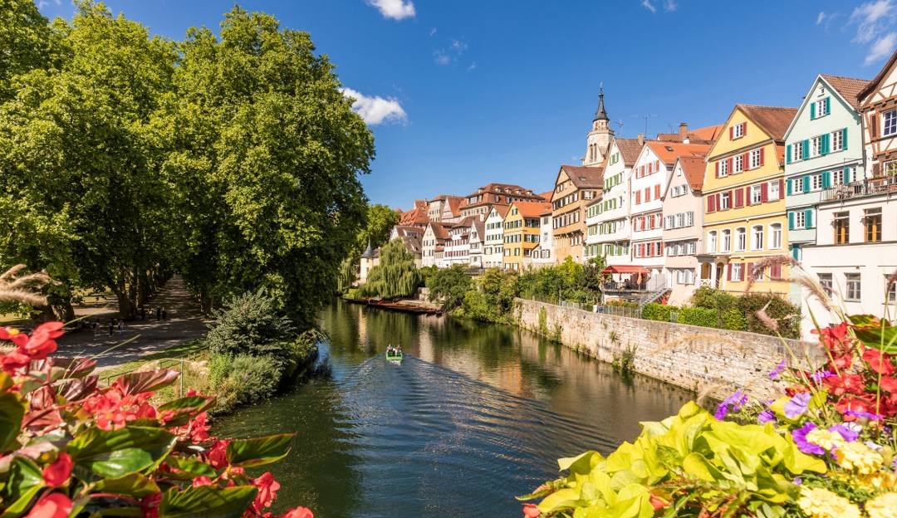

NEQM 2026 — June 8–9, Tübingen

The wokshop takes place at the Max Planck Institute campus, in the historic university town of Tübingen in Baden-Württemberg, Germany. Exact room details will follow.
Max-Planck-Ring 6, 72076 Tübingen, Germany
A limited number of rooms are available at the Max Planck House , conveniently located at the workshop venue, subject to availability.
A list of available hotels, short term rentals, and guest houses is provided by the city. We recommend booking early.
Stuttgart Airport (STR) is the nearest airport, ~30 km away. Buses from Tübingen to the airport and back (X82/828) run roughly every hour. Alternatively, take the S-Bahn (S1/S2/S3) to Stuttgart Hbf, then a regional train to Tübingen (~1 hr total) .
Stuttgart Airport →Tübingen Hbf is well connected via Deutsche Bahn. Direct regional trains run frequently from Stuttgart Hbf (~1 hr).
Deutsche Bahn →From the A81 take the Herrenberg exit and follow B28 to Tübingen. City-centre parking is limited; consider park-and-ride.
Google Maps →The venue is accessible on foot—just be prepared for a bit of a climb. For a more relaxed journey, city buses run frequently via the naldo network from Tübingen Hbf.
naldo Network →